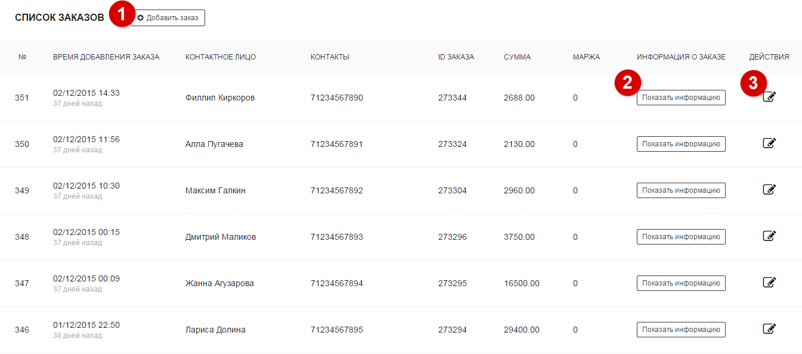
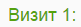
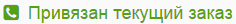

Список заказов
Список заказов предоставляет подробную информацию по каждому заказу, импортированному из CRM либо созданного в трекере (см. кодовый трекер). Для каждого заказа предоставляется последовательность посещений пользователя до этого заказа. Отчет строится за определенный период времени. По умолчанию он соответствует месяцу.
Настройка отчета
Ниже описаны инструменты, с помощью которых вы можете настроить вид отчета:

1Добавление заказа
Данный функционал предназначен для пользователей кодового трекера. В момент обращения пользователя следует спросить у него код заявки, отображаемый на сайте.
Далее при добавлении заказа следует указать данный код, чтобы трекер ассоциировал заказ с посещением.
Параметры заказа
В этом разделе приведены параметры, которые можно указать при добавлении заказа. Жирным обозначены обязательные параметры.
| Параметр | Описание |
|---|---|
| Время добавления заказа | Дата текущего посещения. Добавляется автоматически, можно изменить на собственную |
| Трек-код | Код заказа, выданный пользователю на сайте. Его необходимо спрашивать во время обращения пользователя (нужен для кодового трекинга) |
| Контактное лицо | Имя клиента |
| Телефон | Номер телефона контактного лица |
| Email контактного лица | |
| ID заказа | Идентификатор заказа |
| Сумма | Доход с текущего заказа |
| Маржа | Маржинальность с текущего заказа |
| Комментарий | Комментарии к заказу |
2Подробная информация о посещениях
Каждому заказу соответствует цепочка посещений сайта позвонившего пользователя. Количество посещений в цепочке и набор параметров посещения могут отличаться в зависимости от паттернов поведения пользователя.
Рассмотрим посещение из цепочки:

Порядковы номер посещения
Каждое посещение имеет свой порядковый номер в цепочке. Порядковый номер отображается вверху информации о посещении (например, )
Ассоциированные с заказом посещения
Ассоциированные с заказом посещения - посещения, которые можем однозначно сопоставить с заказом. Информация о таких посещениях (источники трафика, браузеры, устройства и пр.) ассоциируется с текущим заказом и будет использоваться далее в остальных отчетах.
Такие посещения имеют следующий ярлык:

Параметры посещения
Каждое посещение может иметь следующие параметры
| Параметр | Описание |
|---|---|
| Дата визита | Дата текущего посещения |
| Referrer | Реферер посещения |
| Landing | Старница входа |
| utm_medium | Метка utm_medium, взятая из Landing (для offline заказов) либо метка utm_medium звонка, сконвертированного в заказ (для online заказов) |
| utm_source | Метка utm_source, взятая из Landing (для offline заказов) либо метка utm_source звонка, сконвертированного в заказ (для online заказов) |
| utm_campaign | Метка utm_campaign, взятая из Landing (для offline заказов) либо метка utm_campaign звонка, сконвертированного в заказ (для online заказов) |
| utm_term | Метка utm_term, взятая из Landing (для offline заказов) либо метка utm_term звонка, сконвертированного в заказ (для online заказов) |
| utm_content | Метка utm_content, взятая из Landing (для offline заказов) либо метка utm_content звонка, сконвертированного в заказ (для online заказов) |
| IP | IP-адрес пользователя, с которого осуществлялось посещение |
| User Agent | User Agent устройства, с которого осуществлялось посещение |
| Браузер | Браузер пользователя |
| Устройство | Устройство пользователя |
| Платформа | Операционая система, установленная на устройстве |
3Детали заказа
В каждом заказе можно указать дополнительную инфомарцию. Данную инфомарцию можно просмтреть в разделе деталей заказа и отредактировать при необходимости (редактировать можно все поля, кроме даты и трек-кода). Параметры заказы идентичны параметрам, указанным в разделе добавление заказа